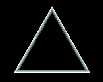
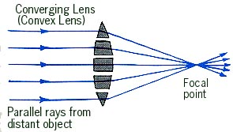
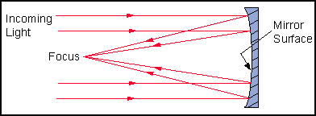
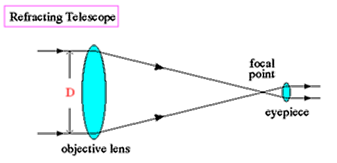
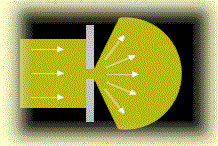
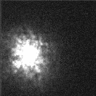
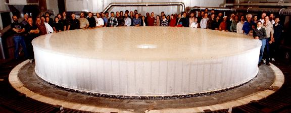
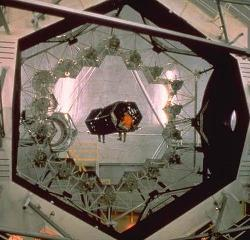
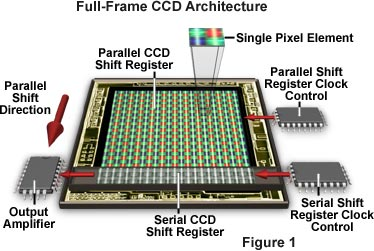
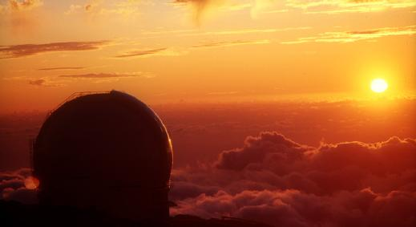

ASTR 121 (O'Connell) Study Guide
14. TELESCOPES

Summit of Mauna Kea, Hawaii
The telescope is the single most important invention for astronomy.
It is a beautiful example of the interplay between technology
(fabrication of quality glass, optics design, polishing techniques,
large mechanical structures, computers) and basic science.
This lecture describes the main features of optical-band
telescopes---i.e. those which operate in or near the part of the EM
spectrum to which our eyes are sensitive. This is the only kind of
telescope which was in widespread use before 1950.
Since that time, astronomers have developed "telescopes" to exploit a
large part of the whole electromagnetic spectrum. Some of those (e.g.
for the ultraviolet and near-infrared) are quite similar to
optical-band telescopes. Others (e.g. for radio and gamma-ray) are
very different.
A. GENERAL & HISTORY
Invented: 1608 (Lippershey, Holland).
Note: microscope invented 1654, also in Holland. Responsible
for opening up a second kind of "invisible world."
First astronomical use: 1610
(Galileo,
Italy). Utterly transformed astronomy (see Study Guide 7.
Purposes
- Collect more light: detect fainter objects---most
important function;
- Light gathering power depends on
diameter2
- Thus, a 10-in diameter telescope collects (10/5)2 =
22 = 4 times as much light as a 5-in telescope.
- An 8-in telescope (widely used by amateur astronomers) collects
1600x more light than the human eye. Can detect over 2000x as many
stars (10 million compared to 5000).
- Resolve sources better: see more detail; depends on both
diameter of telescope and optical quality
- Magnify sources: make image larger for easier study
B. DESIGNS
Basic principle:
- An objective or primary optical element
forms an image (i.e. an accurate representation
of original scene) at a usable focus, where it can be studied
by eye, recorded by film or other detectors (as in a camera), or fed
into yet other instruments
The objective element can be either a lens or a mirror.
There are therefore two main types of telescopes:
- Refracting: the objective is a lens (shaped,
transparent glass) which refracts (or bends) light rays to a
common focus.
The image at the left below shows how a flat
glass surface bends light rays (in this case, two flat surfaces at a
angle combine to make a prism). The shorter the wavelength,
the stronger the bending.
The image at the right shows how a glass surface can be
continuously curved to bring all the light rays passing through
it from a distant object to a common focal point.
Galileo's telescopes were refracting. Largest refractor: 40 in
diameter (built 1896).
| 
|

|
Refraction of Light By a Prism
(click for descriptive animation)
|
Shaped Convex Lens
|
- Reflecting: the objective is shaped mirror, which
reflects rays off its front surface to a common focus. See picture
below. Invented by Gregory; improved by Newton.
The mirror is easy to support from behind, unlike a lens which
must be supported from its edges and tends to sag. Reflectors have many
other advantages. (Click here for more information on these.)
All large telescopes are therefore reflectors. Largest reflector:
400" (10-m) diameter (built 1993).

Reflection of Light by a Figured Mirror
-
 Applet. Here is a Java applet illustrating the
differences between refraction, reflection, and diffraction.
Applet. Here is a Java applet illustrating the
differences between refraction, reflection, and diffraction.

Focal plane:
- For distant objects (including all astronomical objects), the
incoming rays are parallel to one another. Such rays are focussed in a
plane which is one focal length from the objective. This is
called the "focal plane." Click on
the button below for a Java applet illustrating image formation for objects
at different distances.
- In the focal plane, the light rays from a distant object form a
one-to-one representation of the distant scene which is called an
image.
- Ordinarily, a camera or other instrument in placed at the focal
plane. For "visual" use of a telescope, an eyepiece can
be used to magnify the focal plane image so it can be viewed
by the eye. See the illustration above.
C. IMAGE QUALITY
The crispness of images made by a telescope depends on several factors: fabrication
of the optics, the size of the telescope compared to the wavelength of light,
and the Earth's atmosphere.
The "resolution" of a telescope image is quantitatively defined to be
the smallest measurable detail in an image (in seconds of arc).
- Optical Figuring:
- Light is a wave. In order to produce a good image,
telescope optics
must be figured to a minimum tolerance of about 1/4 of the wavelength
(distance between crests) of the light they are intended to focus.
For optical telescopes, this is about 10-5 cm.
- Scale comparison: if a 320" (8-m) diameter telescope mirror were
scaled up to the size of the continental United States, i.e. about
3000 miles diameter, then the maximum ripple allowed in its polishing
would be only about 2 inches!

Diffraction
- Diffraction:
- A fundamental limit on resolution is set by the physics of light.
Since it is a wave
phenomenon, light spreads out or diffracts when it passes
through an aperture. This smears out images.
- Diffraction is worse the longer the wavelength of light and the
smaller the telescope aperture. Click
here
for illustrations of how telescope size improves resolution.
- A 10-in diameter telescope with perfect optics can resolve 1 arc-sec.
- Note that all stars are so distant that they are smaller in angular
size than 1 arc-sec and therefore appear as
point sources in a such a telescope. Only a handful of stars
can be resolved by even the largest telescopes.
 "Seeing"
Produced by Earth's Atmosphere
- Seeing:
- The Earth's atmosphere also refracts light, and
because it is constantly moving, there is always a blurring and
jittering of images in a telescope. Astronomers call this "seeing."
Seeing actually dominates diffraction in most cases and usually limits
resolution in practice to 0.5-2 arc-seconds.
- Above is an enlarged image of the bright star Betelgeuse seen
though a large telescope. It is a large blob, broken up into smaller
near point-like units. Click on the image for a
video of
the seeing effects:
- To partly overcome seeing effects, special equipment such as
adaptive optics can be used. Or, telescopes can be placed
in space (where there's no atmosphere).

Mirror blank for the Large Binocular Telescope.
Click for enlargement.
D. CURRENT MILESTONES:
The Hubble Space
Telescope: 94-in reflector in space (launched 1990)
HST has produced the highest resolution images yet obtained at
visible wavelengths, with blur sizes of only about 0.05 arc-seconds.
This is because of its high quality optics AND the fact that it is
above the Earth's atmosphere, so it does not have to contend with
seeing. Its high resolution also allows it to detect very faint sources.

Keck Observatory: Two
400-in mirror telescopes (1993, Hawaii). Mirrors consist of 36-in
independent segments. See image at right and diagram.
The Very Large Telescope (VLT): Four
320-in monolithic mirror telescopes (2001, Chile)
The Large Binocular Telescope: two 8.4-m diameter
monolithic mirrors on a common mount, now nearing completion. One of
the mirrors is shown above. UVa is a partner in this project.
Other EM spectral bands: Astronomers now exploit most of the
full electromagnetic spectrum. The first instruments outside
the visible range were radio telescopes (1950's). Now: radio
(e.g.the National Radio
Astronomy Observatory, headquarters in Charlottesville), microwave,
infrared, ultraviolet, X-ray, gamma-ray telescopes
Because the Earth's atmosphere screens out many parts of the the EM
spectrum (see Study Guide 10),
telescopes for the gamma-ray, X-ray, ultraviolet, and parts of the
infrared and microwave spectrum must be placed on spacecraft outside
the atmosphere.
E. DETECTORS
The human eye is a sophisticated, auto-focus, auto-exposure,
electrical camera system. However, for all its versatility and
importance to us in everyday life, it is a seriously limited astronomical
detector: it is small, its maximum integration time in only about 0.1
secs, and it has low sensitivity. Astronomers have long sought more
capable detectors to use with telescopes.
Film
- Detects only 1-2% of incident photons but allows long integrations
(hours)
- Provides permanent storage of info, though not digital
- Large formats (up to 20" square for astronomy)
- Was the main astromonical detector used between 1900 and 1980.

Charge-Coupled Device Architecture
"Charge-Coupled-Devices" (CCD's):
- Solid state electronics; widely used now in video cameras & TV
- Astronomical applications pioneered during development of Hubble
Space Telescope (1974-80).
- Works well at both very short (TV) and very long (astronomy) exposure times
- 50-100x more
sensitive than film
- Digital image storage for immediate computer processing
- Small formats
(2-in typical) but can "mosaic" to create large areas
- Now are the standard detectors used in astronomy
Many other types of electronic detectors also used in UV, IR, X-Ray, etc.

Sunset over the William Herschel
Telescope (La Palma, Spain)
Reading for this lecture:
Study Guide 13
Optional: Seeds textbook Chapter 6
Reading for next lecture:
Seeds textbook, Sec. 21-2, 22-1
Study Guide 14
Web Links:
Last modified
March 2007 by rwo
Text copyright © 1998-2007 Robert W. O'Connell. All
rights reserved. These notes are intended for the private,
noncommercial use of students enrolled in Astronomy 121 at the
University of Virginia.

 Previous Guide
Previous Guide
 Guide Index
Guide Index
 Next Guide
Next Guide